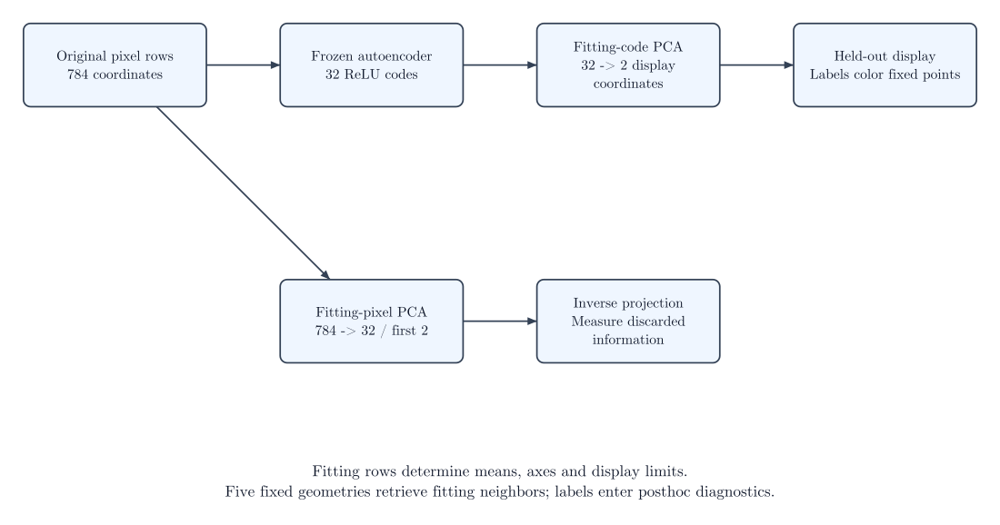
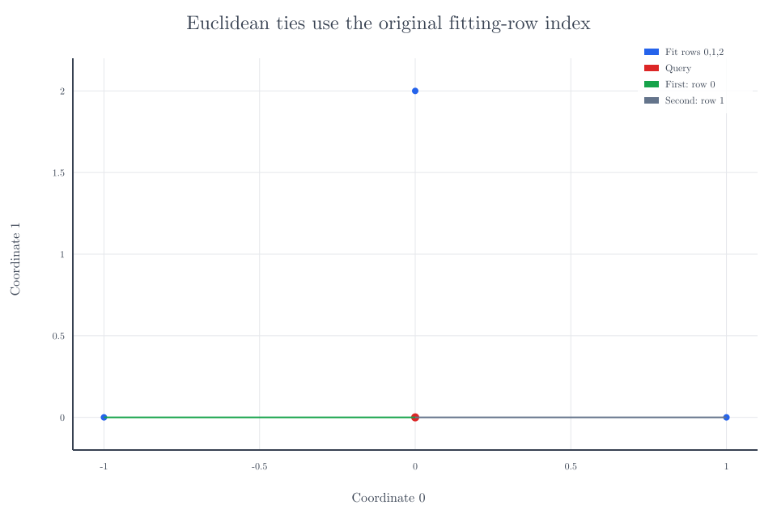
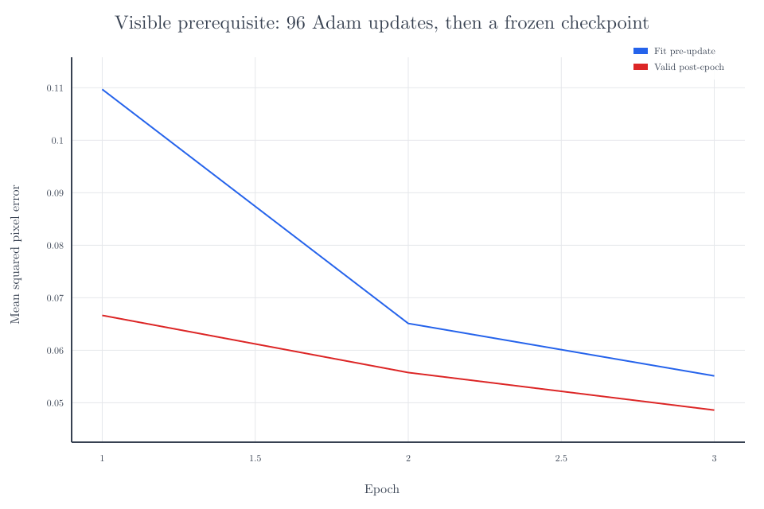
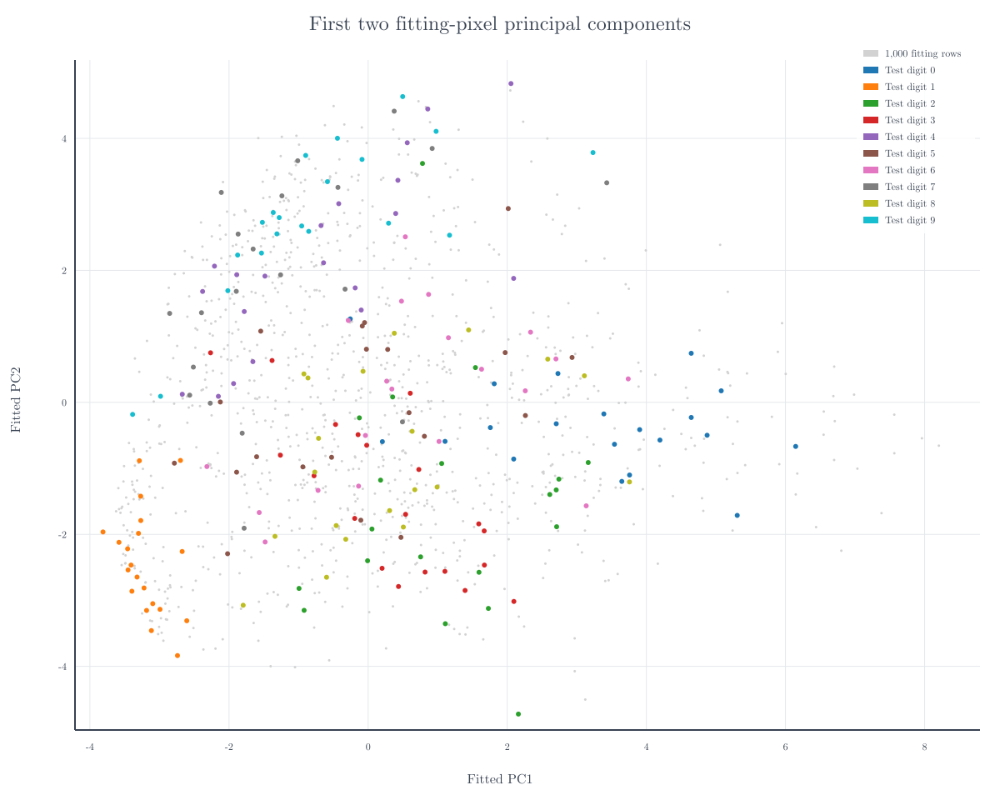
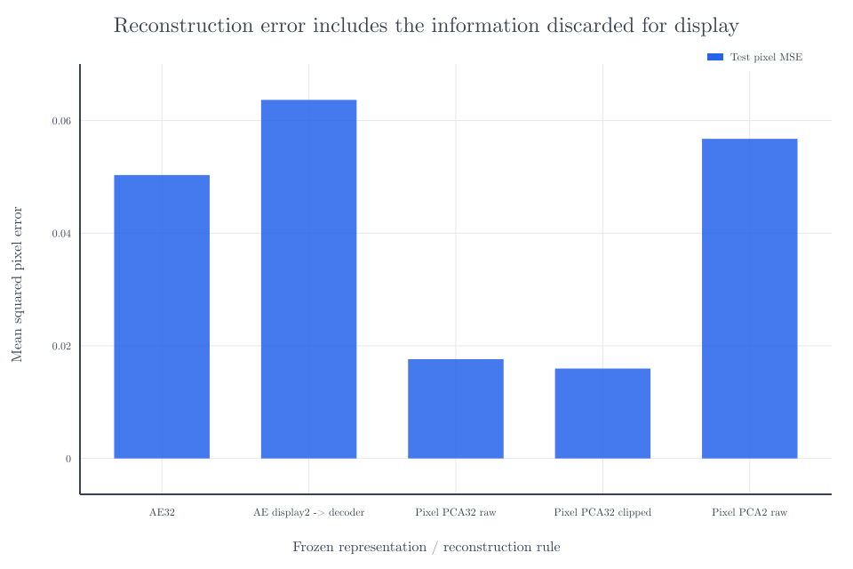
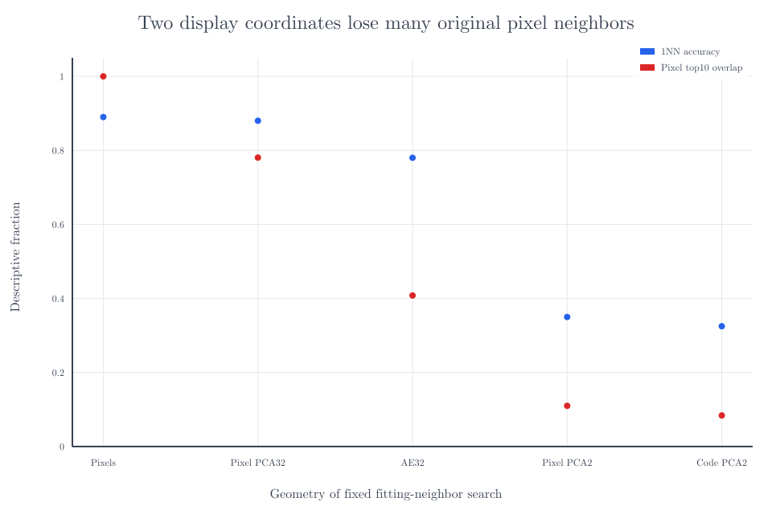
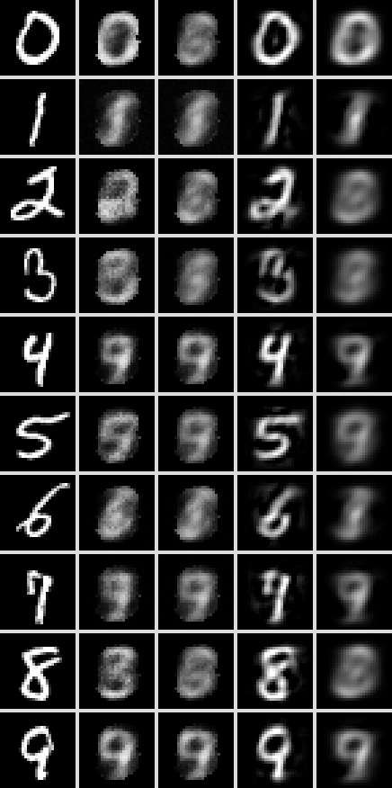
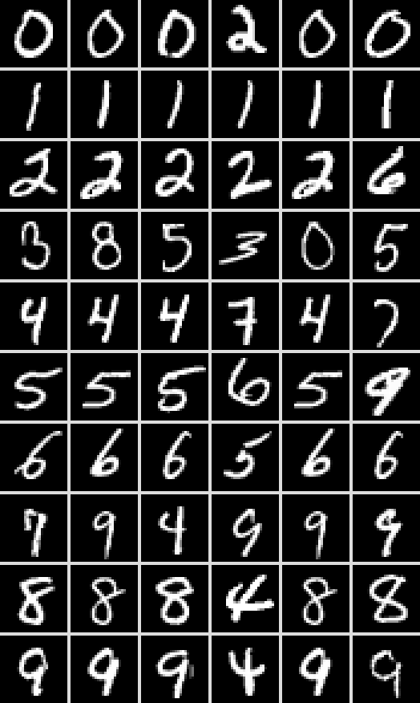

Latent Visualization: What Two Coordinates Keep
Abstract
A two-dimensional picture retains only part of a learned representation. This report freezes a 32-code MNIST autoencoder and fits PCA separately to its fitting codes and to fitting pixels. Both projections use centered thin SVD with sample variances and frozen transforms. The code picture retains 8.4% of pixel-space top-ten neighbors; the full 32-code representation retains 40.8%. Held-out one-neighbor label accuracy is 32.5% in the code picture and 78% in full codes, compared with 89% in pixels and 88% in pixel PCA32. Pixel PCA32 also has lower reconstruction MSE than this small autoencoder. A complete prerequisite exposes all 96 training updates; projection and retrieval then make zero model updates. All images, neighbors and failures remain.
A display is an additional projection
The frozen autoencoder maps 784 pixel coordinates to 32 ReLU code coordinates. Two display coordinates are obtained by fitting PCA to those 32-dimensional fitting codes. Pixel PCA is a separate linear baseline fitted directly to 784-dimensional fitting images. Both use only the 1,000 fitting observations to estimate their means and axes; validation and test observations receive frozen transforms. Digit labels color held-out points and score fixed neighbor lists after the projections are fitted.
PCA here uses the centered data matrix's thin SVD, following the centered, unscaled convention of [R's prcomp](https://stat.ethz.ch/R-manual/R-devel/library/stats/html/prcomp.html). Components are columns of V; sample variances are squared singular values divided by N-1. Signs are arbitrary across implementations, and equal singular values permit subspace rotations.
#include <dm/dm.hpp>
int main() {
std::filesystem::create_directories("build");
dm::graphics::Diagram d(41, 1100);
dm::graphics::DiagramNodeStyle st;
st.width = 5.7;
st.height = 2.6;
st.font_size = 18;
d.node("x", {0, 5}, "Original pixel rows\n784 coordinates", st)
.node("e", {8, 5}, "Frozen autoencoder\n32 ReLU codes", st)
.node("p", {16, 5}, "Fitting-code PCA\n32 -> 2 display coordinates", st)
.node("v", {24, 5}, "Held-out display\nLabels color fixed points", st)
.edge("x", "e")
.edge("e", "p")
.edge("p", "v")
.node("q", {8, -3}, "Fitting-pixel PCA\n784 -> 32 / first 2", st)
.node("r", {16, -3}, "Inverse projection\nMeasure discarded information", st)
.edge("x", "q")
.edge("q", "r")
.text(
{12, -8},
"Fitting rows determine means, axes and display limits.\nFive fixed geometries retrieve "
"fitting neighbors; labels enter posthoc diagnostics.",
20)
.save_svg("build/visualization_method.svg");
}
Four fitting points make projection loss checkable
Take fitting rows [-3,-1],[-3,1],[3,-1],[3,1]. Their mean is [0,0], and their centered cross-product matrix is diagonal with entries 36 and 4. With N-1=3, sample variances are 12 and 4/3. Retaining the first axis keeps x and removes y. Query [2,0.5] reconstructs to [2,0]; it does not move the fitting mean or axes. The omitted coordinate is measurable lost information. PCA signs do not change this inverse projection.
#include <dm/dm.hpp>
int main() {
namespace n = dm::nn;
const auto type = n::DType::Float64;
const auto fitting = n::tensor({-3., -1., -3., 1., 3., -1., 3., 1.}, {4, 2}, type);
const n::models::SvdPca pca(fitting, 2);
const auto query = n::tensor({2., .5}, {1, 2}, type);
const auto score = pca.Transform(query), one = n::slice(score, {0, 0}, {1, 1}),
reconstruction = pca.Reconstruct(one);
std::print(
"Variances: {:.6f}, {:.6f}. Query [{:.1f},{:.1f}] reconstructs to [{:.1f},{:.1f}].\n",
pca.variances().at({0}),
pca.variances().at({1}),
query.at({0, 0}),
query.at({0, 1}),
reconstruction.at({0, 0}),
reconstruction.at({0, 1}));
auto plot = dm::graphics::RPlot::create();
plot.points({-3, -3, 3, 3}, {-1, 1, -1, 1}, "Fitting rows", {37, 99, 235}, 4.)
.lines({-3.5, 3.5}, {0, 0}, "Fitted axis", {22, 163, 74}, 2.)
.points({2}, {.5}, "Query", {220, 38, 38}, 5.)
.lines({2, 2}, {.5, 0}, "Discarded y", {100, 116, 139}, 2.)
.points({2}, {0}, "PCA inverse", {22, 163, 74}, 5.)
.x_label("Original coordinate x")
.y_label("Original coordinate y")
.y_limits(-1.3, 2.3)
.title("Frozen fitting PCA: one coordinate is discarded")
.save_svg("build/visualization_toy_pca.svg");
}Variances: 12.000000, 1.333333. Query [2.0,0.5] reconstructs to [2.0,0.0].

Neighbor geometry has its own controls
For fitting coordinates [-1,0],[1,0],[0,2] and query [0,0], the first two distances are tied. The native retrieval API orders equal distances by the smaller fitting row, returning [0,1]. For reference neighbors [0,1] and candidate neighbors [1,2], membership overlap is 1/2. Only the first neighbor predicts a label in the one-neighbor diagnostic. Labels are supplied after retrieval and never change distances. This is a fixed Euclidean probe following the nearest-neighbor rule of [Cover and Hart (1967)](https://isl.stanford.edu/~cover/papers/transIT/0021cove.pdf).
#include <dm/dm.hpp>
int main() {
namespace n = dm::nn;
const auto fitting = n::tensor({-1., 0., 1., 0., 0., 2.}, {3, 2}), query = n::zeros({1, 2});
const auto neighbors = n::models::NearestFitRows(fitting, query, 2),
candidate = n::from_vector(std::vector<int>{1, 2}, {1, 2});
const auto overlap = n::models::NeighborOverlap(neighbors, candidate);
const auto accuracy = n::models::NeighborLabelAccuracy(
neighbors, n::from_vector(std::vector<int>{4, 8, 9}), n::from_vector(std::vector<int>{4}));
std::print(
"Nearest rows: {}, {}; overlap {:.1f}; posthoc first-neighbor accuracy {:.1f}.\n",
neighbors.at({0, 0}),
neighbors.at({0, 1}),
overlap,
accuracy);
auto plot = dm::graphics::RPlot::create();
plot.points({-1, 1, 0}, {0, 0, 2}, "Fit rows 0,1,2", {37, 99, 235}, 4.)
.points({0}, {0}, "Query", {220, 38, 38}, 5.)
.lines({0, -1}, {0, 0}, "First: row 0", {22, 163, 74}, 2.)
.lines({0, 1}, {0, 0}, "Second: row 1", {100, 116, 139}, 2.)
.x_label("Coordinate 0")
.y_label("Coordinate 1")
.title("Euclidean ties use the original fitting-row index")
.save_svg("build/visualization_toy_neighbors.svg");
}Nearest rows: 0, 1; overlap 0.5; posthoc first-neighbor accuracy 1.0.

A complete visible prerequisite, then frozen analysis
Native MNIST preparation supplies 1,000 fitting, 200 validation and 200 held-out test images, balanced across ten digits with disjoint original IDs. Test IDs belong to the official test split. This complete C++ program shows the original 784–32–784 ReLU/sigmoid architecture, seed 1471, Adam learning rate 0.003, batch-order seed 1483 and all three epochs / 96 updates. Every epoch visits all 1,000 fitting rows, including the final batch of eight. Validation reconstruction MSE selects among all three post-epoch checkpoints; digit labels do not enter this fit.
The program also regenerates the original prerequisite's initial/selected model arrays and metadata. Diagnostic errors use native Float64 tensor reductions. Their tiny reduction roundoff is recorded separately from exact parameter/prediction comparisons; training time is measured for this run and is inherently variable. No external model placement or Python preparation is needed. The projection application that follows adds zero optimizer updates.
#include <dm/dm.hpp>
namespace n = dm::nn;
double Score(const n::Tensor& prediction, const n::Tensor& target) {
return n::mean(
n::square(n::cast(prediction, n::DType::Float64) - n::cast(target, n::DType::Float64)))
.item();
}
int main() {
std::filesystem::create_directories("build");
const std::filesystem::path cache = dm::datasets::data_home();
dm::datasets::prepare_example_data("mnist-assets", cache.string());
const auto pools = n::models::LoadSaliency(cache / "saliency");
const auto fit = pools[0].images.reshape({1000, 784}),
validation = pools[1].images.reshape({200, 784}),
test = pools[2].images.reshape({200, 784});
n::ParameterStore p(1471);
{
n::NoGradGuard guard;
n::models::UndercompleteAutoencoder(p, n::zeros({1, 784}));
}
if (p.count() != 50992 || p.size() != 4)
return 1;
p.save("build/visualization_initial_encoder.npz");
n::Tensor initial_fit, initial_test, pixel_mean;
{
n::NoGradGuard guard;
initial_fit = n::models::UndercompleteAutoencoder(p, fit).reconstruction;
initial_test = n::models::UndercompleteAutoencoder(p, test).reconstruction;
pixel_mean = n::cast(n::mean(n::cast(fit, n::DType::Float64), {0}, true), n::DType::Float32);
}
n::OptimizerConfig config;
config.kind = n::OptimizerKind::Adam;
n::Optimizer optimizer(p, .003, config);
n::BatchOrder batches(1000, 32, 1483);
double best = std::numeric_limits<double>::infinity();
int selected = 0, updates = 0;
std::vector<double> epochs, training, valid;
const auto started = std::chrono::steady_clock::now();
std::print(
"| epoch | fitting pre-update pixel MSE | validation post-epoch MSE |\n|---:|---:|---:|\n");
for (int epoch = 1; epoch <= 3; ++epoch) {
batches.begin_epoch();
double total = 0;
std::size_t seen = 0;
for (;;) {
const auto rows = batches.next();
if (rows.empty())
break;
const auto image = n::take_rows(fit, rows),
out = n::models::UndercompleteAutoencoder(p, image).reconstruction;
const auto loss = n::mse(out, image);
const auto value = loss.item();
if (!std::isfinite(value))
return 1;
total += value * rows.size();
seen += rows.size();
optimizer.minimize(loss);
++updates;
}
n::NoGradGuard guard;
const auto error =
Score(n::models::UndercompleteAutoencoder(p, validation).reconstruction, validation);
if (seen != 1000 || !std::isfinite(error))
return 1;
if (error < best) {
best = error;
selected = epoch;
p.save("build/visualization_selected_encoder.npz");
}
epochs.push_back(epoch);
training.push_back(total / seen);
valid.push_back(error);
std::print("| {} | {:.9f} | {:.9f} |\n", epoch, total / seen, error);
}
const double seconds =
std::chrono::duration<double>(std::chrono::steady_clock::now() - started).count();
if (updates != 96 || selected < 1)
return 1;
p.load("build/visualization_selected_encoder.npz");
n::NoGradGuard guard;
const auto fit_result = n::models::UndercompleteAutoencoder(p, fit).reconstruction;
const auto test_result = n::models::UndercompleteAutoencoder(p, test);
std::vector<std::int64_t> shifted;
for (int row = 0; row < 200; ++row)
shifted.push_back((row + 1) % 200);
const auto shuffled = n::models::UndercompleteDecoder(p, n::take_rows(test_result.code, shifted)),
zero = n::models::UndercompleteDecoder(p, n::zeros({200, 32}));
const auto one = n::models::UndercompleteAutoencoder(p, n::take_rows(test, {0})).reconstruction;
const auto parity = n::max(n::abs(one - n::take_rows(test_result.reconstruction, {0}))).item();
if (parity >= 1e-6)
return 1;
std::ofstream meta("build/visualization_encoder_metrics.json");
meta.precision(17);
meta << "{\"epochs\":3,\"selected_epoch\":" << selected << ",\"updates\":" << updates
<< ",\"fit_initial_mse\":" << Score(initial_fit, fit)
<< ",\"fit_mse\":" << Score(fit_result, fit) << ",\"validation_mse\":" << best
<< ",\"test_mse\":" << Score(test_result.reconstruction, test)
<< ",\"test_initial_mse\":" << Score(initial_test, test)
<< ",\"test_mean_mse\":" << Score(n::broadcast_to(pixel_mean, test.shape()), test)
<< ",\"test_black_mse\":" << Score(n::zeros_like(test), test)
<< ",\"test_shuffled_mse\":" << Score(shuffled, test)
<< ",\"test_zero_code_mse\":" << Score(zero, test)
<< ",\"single_batch_max_error\":" << parity << ",\"training_seconds\":" << seconds << "}\n";
if (!meta)
return 1;
std::print(
"\nSelected epoch {} after {} Adam updates. Held-out MSE {:.9f}.\n",
selected,
updates,
Score(test_result.reconstruction, test));
auto plot = dm::graphics::RPlot::create();
plot.lines(epochs, training, "Fit pre-update", {37, 99, 235}, 2.)
.lines(epochs, valid, "Valid post-epoch", {220, 38, 38}, 2.)
.x_label("Epoch")
.y_label("Mean squared pixel error")
.title("Visible prerequisite: 96 Adam updates, then a frozen checkpoint")
.save_svg("build/visualization_prerequisite.svg");
}| epoch | fitting pre-update pixel MSE | validation post-epoch MSE |
|---|---|---|
| 1 | 0.109698705 | 0.066644995 |
| 2 | 0.065107134 | 0.055756478 |
| 3 | 0.055117222 | 0.048601794 |
Selected epoch 3 after 96 Adam updates. Held-out MSE 0.050325811.

Fit each projection once and keep every held-out result
The full code below restores the model and checks every one of its 50,992 values for bitwise immutability. Pixel PCA retains 32 axes; code PCA retains two. Means, components, sample variances, all three transformed pools and all inverse projections are saved. The two-coordinate code inverse is cast to Float32 before entering the original frozen decoder. Pixel PCA reconstruction stays Float64; raw and clipped pixel errors are reported separately.
Five Euclidean spaces retrieve ten fitting neighbors for each test query: pixels, full AE codes, two code-PCA coordinates, 32 pixel-PCA coordinates and the first two pixel-PCA coordinates. Distances widen to double before subtracting and accumulate squared differences in feature order. Equal-distance fitting rows use smaller row indices. Query labels score the already-fixed lists. The retained source IDs and full neighbor tables make that separation inspectable.
#include <dm/dm.hpp>
namespace n = dm::nn;
namespace m = n::models;
void Require(bool condition, const std::string& message) {
if (!condition)
throw std::runtime_error(message);
}
double Mse(const n::Tensor& x, const n::Tensor& y, bool clipped = false) {
const auto a = m::DoubleSampleRows(x), b = m::DoubleSampleRows(y);
return n::mean(n::square((clipped ? n::clip(a, 0., 1.) : a) - b)).item();
}
int main() {
const std::filesystem::path cache = dm::datasets::data_home(), root = "build/visualization";
std::filesystem::create_directories(root);
dm::datasets::prepare_example_data("mnist-assets", cache.string());
const auto pools = m::LoadSaliency(cache / "saliency");
n::ParameterStore p(1471);
{
n::NoGradGuard guard;
m::UndercompleteAutoencoder(p, n::zeros({1, 784}));
}
p.load("build/visualization_selected_encoder.npz");
n::NamedTensors before;
for (const auto& name : p.names())
before.emplace_back(name, p.at(name).detach().clone());
std::map<std::string, n::Tensor> arrays;
for (int k = 0; k < 3; ++k) {
const std::string split = k == 0 ? "fit" : k == 1 ? "validation" : "test";
n::NoGradGuard guard;
const auto out =
m::UndercompleteAutoencoder(p, pools[k].images.reshape({pools[k].images.size(0), 784}));
arrays.emplace(split + "_images", pools[k].images);
arrays.emplace(split + "_labels", pools[k].labels);
arrays.emplace(split + "_source_ids", pools[k].source);
arrays.emplace(split + "_code", out.code.contiguous());
arrays.emplace(split + "_ae_reconstruction", out.reconstruction.contiguous());
}
const m::SvdPca pixel_pca(pools[0].images, 32), code_pca(arrays.at("fit_code"), 2);
for (const auto& name : {std::string("pixel_pca"), std::string("code_pca")}) {
const auto& fit = name == "pixel_pca" ? pixel_pca : code_pca;
arrays.emplace(name + "_mean", fit.mean());
arrays.emplace(name + "_components", fit.components());
arrays.emplace(name + "_variances", fit.variances());
for (int k = 0; k < 3; ++k) {
const std::string split = k == 0 ? "fit" : k == 1 ? "validation" : "test";
const auto input = name == "pixel_pca" ? pools[k].images : arrays.at(split + "_code");
const auto score = k == 0 ? fit.scores() : fit.Transform(input);
arrays.emplace(name + "_" + split, score);
arrays.emplace(name + "_" + split + "_reconstruction", fit.Reconstruct(score));
}
}
n::Tensor ae2decoded;
{
n::NoGradGuard guard;
ae2decoded = m::UndercompleteDecoder(
p, n::cast(arrays.at("code_pca_test_reconstruction"), n::DType::Float32).contiguous());
}
arrays.emplace("ae_projected2_decoder_reconstruction", ae2decoded);
const auto pixel_fit2 = n::slice(arrays.at("pixel_pca_fit"), {0, 0}, {1000, 2}).contiguous();
const auto pixel_test2 = n::slice(arrays.at("pixel_pca_test"), {0, 0}, {200, 2}).contiguous();
const auto pixel2 = pixel_pca.Reconstruct(pixel_test2);
arrays.emplace("pixel_pca2_test_reconstruction", pixel2);
const std::map<std::string, n::Tensor> lists{
{"pixel", m::NearestFitRows(pools[0].images, pools[2].images, 10)},
{"ae32", m::NearestFitRows(arrays.at("fit_code"), arrays.at("test_code"), 10)},
{"ae2", m::NearestFitRows(arrays.at("code_pca_fit"), arrays.at("code_pca_test"), 10)},
{"pca32", m::NearestFitRows(arrays.at("pixel_pca_fit"), arrays.at("pixel_pca_test"), 10)},
{"pca2", m::NearestFitRows(pixel_fit2, pixel_test2, 10)}};
for (const auto& [name, value] : lists)
arrays.emplace(name + "_neighbors", value);
const auto ae_mse = Mse(arrays.at("test_ae_reconstruction"), pools[2].images),
ae2_mse = Mse(ae2decoded, pools[2].images);
const auto pca_mse = Mse(arrays.at("pixel_pca_test_reconstruction"), pools[2].images),
pca_clipped = Mse(arrays.at("pixel_pca_test_reconstruction"), pools[2].images, true),
pca2_mse = Mse(pixel2, pools[2].images);
// These bounds are fitted once. Every held-out point is retained at the boundary if needed.
auto clipped_points = [](const n::Tensor& fit, const n::Tensor& test) {
const auto low = n::min(fit, {0}, true), high = n::max(fit, {0}, true),
padding = n::maximum((high - low) * .05, n::full({1, 2}, 1e-6, n::DType::Float64));
return n::count_nonzero(
n::any(
n::logical_or(n::less(test, low - padding), n::greater(test, high + padding)),
{1}))
.item<std::int64_t>();
};
const auto ac = clipped_points(arrays.at("code_pca_fit"), arrays.at("code_pca_test")),
pc = clipped_points(pixel_fit2, pixel_test2);
for (const auto& [name, value] : before)
Require(
n::equal_bits(value, p.at(name)),
"PCA retrieval and code-only decoding must leave every model value unchanged");
n::save_npz((root / "analysis.npz").string(), n::NamedTensors(arrays.begin(), arrays.end()));
p.save((root / "model_arrays.npz").string());
std::filesystem::copy_file(
cache / "saliency/manifest.json",
root / "data_manifest.json",
std::filesystem::copy_options::overwrite_existing);
std::filesystem::copy_file(
"build/visualization_encoder_metrics.json",
root / "encoder_metrics.json",
std::filesystem::copy_options::overwrite_existing);
std::ofstream meta(root / "metrics.json");
meta.precision(17);
meta << "{\"additional_training_updates\":0,\"encoder_parameters\":50992,\"code_dimensions\":32,"
"\"display_dimensions\":2,\"fit_records\":1000,\"validation_records\":200,\"test_"
"records\":200,\"ae_test_mse\":"
<< ae_mse << ",\"ae_projected2_decoder_test_mse\":" << ae2_mse
<< ",\"pixel_pca32_test_mse\":" << pca_mse
<< ",\"pixel_pca32_clipped_test_mse\":" << pca_clipped
<< ",\"pixel_pca2_test_mse\":" << pca2_mse << ",\"ae_display_clipped_test_points\":" << ac
<< ",\"pixel_display_clipped_test_points\":" << pc;
for (const auto& [name, value] : lists)
meta << ",\"" << name << "_test_1nn_label_accuracy\":"
<< m::NeighborLabelAccuracy(value, pools[0].labels, pools[2].labels) << ",\"" << name
<< "_top10_pixel_neighbor_overlap\":" << m::NeighborOverlap(lists.at("pixel"), value);
meta << "}\n";
Require(bool(meta), "Complete projection metrics must be saved");
std::print(
"| representation / reconstruction | held-out pixel MSE |\n|---|---:|\n| Frozen AE, 32 codes "
"| {:.9f} |\n| AE codes projected to 2, inverse-projected, decoded | {:.9f} |\n| Pixel PCA, "
"32 axes, raw | {:.9f} |\n| Pixel PCA, 32 axes, clipped | {:.9f} |\n| Pixel PCA, 2 axes, raw "
"| {:.9f} |\n",
ae_mse,
ae2_mse,
pca_mse,
pca_clipped,
pca2_mse);
std::print(
"\n| neighbor space | posthoc 1NN digit accuracy | overlap with pixel top10 "
"|\n|---|---:|---:|\n");
for (const auto& [name, value] : lists)
std::print(
"| {} | {:.4f} | {:.4f} |\n",
name,
m::NeighborLabelAccuracy(value, pools[0].labels, pools[2].labels),
m::NeighborOverlap(lists.at("pixel"), value));
std::print(
"\nZero new optimizer updates. All {} model values stay bit-exact. Clipped display points: "
"code PCA {}, pixel PCA {}.\n",
p.count(),
ac,
pc);
}| representation / reconstruction | held-out pixel MSE |
|---|---|
| Frozen AE, 32 codes | 0.050325811 |
| AE codes projected to 2, inverse-projected, decoded | 0.063672576 |
| Pixel PCA, 32 axes, raw | 0.017631299 |
| Pixel PCA, 32 axes, clipped | 0.015966440 |
| Pixel PCA, 2 axes, raw | 0.056757339 |
| neighbor space | posthoc 1NN digit accuracy | overlap with pixel top10 |
|---|---|---|
| ae2 | 0.3250 | 0.0840 |
| ae32 | 0.7800 | 0.4080 |
| pca2 | 0.3500 | 0.1100 |
| pca32 | 0.8800 | 0.7805 |
| pixel | 0.8900 | 1.0000 |
Zero new optimizer updates. All 50992 model values stay bit-exact. Clipped display points: code PCA 0, pixel PCA 0.
Two displays with fitting-only limits
Each panel shows all 1,000 fitting rows in gray and every one of the 200 held-out rows colored by its digit label. Its own fitting min/max sets each axis, padded by 5% of fitting span with a 1e-6 minimum. Held-out values outside those bounds would be retained at the boundary and counted; both observed clipping counts are zero. The two panels use independent fitted limits, so their absolute axis scales should be read separately. The encoder remains 32-dimensional.
#include <dm/dm.hpp>
int main() {
namespace n = dm::nn;
std::map<std::string, n::Tensor> a;
for (const auto& [key, value] : n::load_npz("build/visualization/analysis.npz"))
a.emplace(key, value);
const auto fit = n::slice(a.at("code_pca_fit"), {0, 0}, {1000, 2}).contiguous(),
test = n::slice(a.at("code_pca_test"), {0, 0}, {200, 2}).contiguous();
const auto low = n::min(fit, {0}, true), high = n::max(fit, {0}, true),
pad = n::maximum((high - low) * .05, n::full({1, 2}, 1e-6, n::DType::Float64));
const auto lower = low - pad, upper = high + pad, display = n::clip(test, lower, upper);
const auto labels = a.at("test_labels").to_vector<int>();
const std::vector<dm::graphics::RGB> palette{
{31, 119, 180},
{255, 127, 14},
{44, 160, 44},
{214, 39, 40},
{148, 103, 189},
{140, 86, 75},
{227, 119, 194},
{127, 127, 127},
{188, 189, 34},
{23, 190, 207}};
auto plot = dm::graphics::RPlot::create();
plot.points(
n::select(fit, 1, 0).to_vector<double>(),
n::select(fit, 1, 1).to_vector<double>(),
"1,000 fitting rows",
{210, 210, 210},
1.5);
for (int digit = 0; digit < 10; ++digit) {
std::vector<std::int64_t> rows;
for (int row = 0; row < 200; ++row)
if (labels[row] == digit)
rows.push_back(row);
const auto points = n::take_rows(display, rows);
plot.points(
n::select(points, 1, 0).to_vector<double>(),
n::select(points, 1, 1).to_vector<double>(),
"Test digit " + std::to_string(digit),
palette[digit],
3.);
}
const auto clipped =
n::count_nonzero(n::any(n::logical_or(n::less(test, lower), n::greater(test, upper)), {1}))
.item<std::int64_t>();
std::print("All 200 held-out points retained; boundary-clipped points: {}.\n", clipped);
plot.x_limits(lower.at({0, 0}), upper.at({0, 0}))
.y_limits(lower.at({0, 1}), upper.at({0, 1}))
.x_label("Fitted PC1")
.y_label("Fitted PC2")
.size(1200, 960)
.title("Two-coordinate display of 32D frozen autoencoder codes")
.save_svg("build/visualization_code_scatter.svg");
}All 200 held-out points retained; boundary-clipped points: 0.

#include <dm/dm.hpp>
int main() {
namespace n = dm::nn;
std::map<std::string, n::Tensor> a;
for (const auto& [key, value] : n::load_npz("build/visualization/analysis.npz"))
a.emplace(key, value);
const auto fit = n::slice(a.at("pixel_pca_fit"), {0, 0}, {1000, 2}).contiguous(),
test = n::slice(a.at("pixel_pca_test"), {0, 0}, {200, 2}).contiguous();
const auto low = n::min(fit, {0}, true), high = n::max(fit, {0}, true),
pad = n::maximum((high - low) * .05, n::full({1, 2}, 1e-6, n::DType::Float64));
const auto lower = low - pad, upper = high + pad, display = n::clip(test, lower, upper);
const auto labels = a.at("test_labels").to_vector<int>();
const std::vector<dm::graphics::RGB> palette{
{31, 119, 180},
{255, 127, 14},
{44, 160, 44},
{214, 39, 40},
{148, 103, 189},
{140, 86, 75},
{227, 119, 194},
{127, 127, 127},
{188, 189, 34},
{23, 190, 207}};
auto plot = dm::graphics::RPlot::create();
plot.points(
n::select(fit, 1, 0).to_vector<double>(),
n::select(fit, 1, 1).to_vector<double>(),
"1,000 fitting rows",
{210, 210, 210},
1.5);
for (int digit = 0; digit < 10; ++digit) {
std::vector<std::int64_t> rows;
for (int row = 0; row < 200; ++row)
if (labels[row] == digit)
rows.push_back(row);
const auto points = n::take_rows(display, rows);
plot.points(
n::select(points, 1, 0).to_vector<double>(),
n::select(points, 1, 1).to_vector<double>(),
"Test digit " + std::to_string(digit),
palette[digit],
3.);
}
const auto clipped =
n::count_nonzero(n::any(n::logical_or(n::less(test, lower), n::greater(test, upper)), {1}))
.item<std::int64_t>();
std::print("All 200 held-out points retained; boundary-clipped points: {}.\n", clipped);
plot.x_limits(lower.at({0, 0}), upper.at({0, 0}))
.y_limits(lower.at({0, 1}), upper.at({0, 1}))
.x_label("Fitted PC1")
.y_label("Fitted PC2")
.size(1200, 960)
.title("First two fitting-pixel principal components")
.save_svg("build/visualization_pixel_scatter.svg");
}All 200 held-out points retained; boundary-clipped points: 0.

Reconstruction loss and neighborhood retention quantify the display
For this checkpoint, the AE's held-out MSE is 0.050326. Inverse-projecting its two display coordinates and decoding raises that error to 0.063673. Pixel PCA32 gives raw MSE 0.017631, and clipping its reconstructed pixels to [0,1] reduces that to 0.015966. Pixel PCA2 gives raw MSE 0.056757. These are different fitted models, numerical dtypes and losses; the shared count of 32 coordinates does not match parameter count, optimization budget or serialized bit rate.
#include <dm/dm.hpp>
int main() {
namespace n = dm::nn;
std::map<std::string, n::Tensor> a;
for (const auto& [key, value] : n::load_npz("build/visualization/analysis.npz"))
a.emplace(key, value);
const auto target = n::models::DoubleSampleRows(a.at("test_images"));
const std::vector<std::string> fields{
"test_ae_reconstruction",
"ae_projected2_decoder_reconstruction",
"pixel_pca_test_reconstruction",
"pixel_pca_test_reconstruction",
"pixel_pca2_test_reconstruction"},
names{
"AE32",
"AE display2 -> decoder",
"Pixel PCA32 raw",
"Pixel PCA32 clipped",
"Pixel PCA2 raw"};
std::vector<double> x, error;
for (int i = 0; i < 5; ++i) {
const auto raw = n::models::DoubleSampleRows(a.at(fields[i]));
x.push_back(i);
error.push_back(n::mean(n::square((i == 3 ? n::clip(raw, 0., 1.) : raw) - target)).item());
}
auto plot = dm::graphics::RPlot::create();
plot.bars(x, error, "Test pixel MSE", dm::RGBA{37, 99, 235}, .65)
.x_ticks(x, names)
.x_label("Frozen representation / reconstruction rule")
.y_label("Mean squared pixel error")
.title("Reconstruction error includes the information discarded for display")
.save_svg("build/visualization_reconstruction_errors.svg");
}
One-neighbor accuracy is 89% in pixels, 88% in pixel PCA32, 78% in AE32, 35% in pixel PCA2 and 32.5% in code PCA2. Top-ten overlap with pixel neighbors is 78.05% for pixel PCA32, 40.8% for AE32, 11% for pixel PCA2 and 8.4% for code PCA2. Color clusters therefore need to be read alongside the losses and the neighbor geometry. The label probe is descriptive and has no repeated-seed or uncertainty analysis.
#include <dm/dm.hpp>
int main() {
namespace n = dm::nn;
std::map<std::string, n::Tensor> a;
for (const auto& [key, value] : n::load_npz("build/visualization/analysis.npz"))
a.emplace(key, value);
const std::vector<std::string> spaces{"pixel", "pca32", "ae32", "pca2", "ae2"},
names{"Pixels", "Pixel PCA32", "AE32", "Pixel PCA2", "Code PCA2"};
std::vector<double> x, accuracy, overlap;
for (int i = 0; i < 5; ++i) {
x.push_back(i);
const auto list = a.at(spaces[i] + "_neighbors");
accuracy.push_back(
n::models::NeighborLabelAccuracy(list, a.at("fit_labels"), a.at("test_labels")));
overlap.push_back(n::models::NeighborOverlap(a.at("pixel_neighbors"), list));
}
auto plot = dm::graphics::RPlot::create();
plot.points(x, accuracy, "1NN accuracy", {37, 99, 235}, 4.)
.points(x, overlap, "Pixel top10 overlap", {220, 38, 38}, 4.)
.x_ticks(x, names)
.y_limits(0, 1.05)
.x_label("Geometry of fixed fitting-neighbor search")
.y_label("Descriptive fraction")
.title("Two display coordinates lose many original pixel neighbors")
.save_svg("build/visualization_neighbor_diagnostics.svg");
}
Fixed cases expose reconstruction and retrieval failures
The next two galleries choose the first held-out image of each true digit in source order, with no output-quality selection. Rows run from digit 0 to 9. The reconstruction columns are original, AE32, inverse-projected code PCA2 then decoded, raw pixel PCA32 and raw pixel PCA2. Grayscale display clips to [0,1] while raw PCA arrays and raw MSE remain unchanged.
#include <dm/dm.hpp>
int main() {
namespace n = dm::nn;
std::map<std::string, n::Tensor> a;
for (const auto& [key, value] : n::load_npz("build/visualization/analysis.npz"))
a.emplace(key, value);
const auto labels = a.at("test_labels").to_vector<int>(),
ids = a.at("test_source_ids").to_vector<int>();
const std::vector<std::string> fields{
"test_images",
"test_ae_reconstruction",
"ae_projected2_decoder_reconstruction",
"pixel_pca_test_reconstruction",
"pixel_pca2_test_reconstruction"};
std::vector<n::Tensor> panels;
std::print("| digit | fixed held-out source ID |\n|---:|---:|\n");
for (int digit = 0; digit < 10; ++digit) {
const auto row = std::find(labels.begin(), labels.end(), digit) - labels.begin();
if (row == 200)
return 1;
std::print("| {} | {} |\n", digit, ids[row]);
for (const auto& field : fields)
panels.push_back(
n::cast(n::take_rows(n::models::DoubleSampleRows(a.at(field)), {row}), n::DType::Float32)
.reshape({1, 28, 28, 1}));
}
n::save_image_grid(
n::concat(panels, 0),
"build/visualization_reconstruction_gallery.png",
5,
0,
1,
4,
220. / 255.,
3);
}| digit | fixed held-out source ID |
|---|---|
| 0 | 66921 |
| 1 | 63380 |
| 2 | 68936 |
| 3 | 62280 |
| 4 | 62094 |
| 5 | 65222 |
| 6 | 61209 |
| 7 | 61721 |
| 8 | 69402 |
| 9 | 62570 |

The final gallery shows the same fixed queries followed by each space's nearest fitting image. Columns are query, pixels, AE32, code PCA2, pixel PCA32 and pixel PCA2. The table retains the query's source ID and every predicted digit. These examples illustrate the already-fixed lists; they do not replace the metrics over all 200 queries.
#include <dm/dm.hpp>
int main() {
namespace n = dm::nn;
std::map<std::string, n::Tensor> a;
for (const auto& [key, value] : n::load_npz("build/visualization/analysis.npz"))
a.emplace(key, value);
const auto test_labels = a.at("test_labels").to_vector<int>(),
fit_labels = a.at("fit_labels").to_vector<int>(),
ids = a.at("test_source_ids").to_vector<int>();
const std::vector<std::string> spaces{"pixel", "ae32", "ae2", "pca32", "pca2"};
std::vector<n::Tensor> panels;
std::print(
"| query truth / source ID | pixel | AE32 | code PCA2 | pixel PCA32 | pixel PCA2 "
"|\n|---|---:|---:|---:|---:|---:|\n");
for (int digit = 0; digit < 10; ++digit) {
const auto row = std::find(test_labels.begin(), test_labels.end(), digit) - test_labels.begin();
if (row == 200)
return 1;
panels.push_back(n::take_rows(a.at("test_images"), {row}));
std::print("| {} / {} ", digit, ids[row]);
for (const auto& name : spaces) {
const auto neighbor = std::int64_t(a.at(name + "_neighbors").at({row, 0}));
panels.push_back(n::take_rows(a.at("fit_images"), {neighbor}));
std::print("| {} ", fit_labels[neighbor]);
}
std::print("|\n");
}
n::save_image_grid(
n::concat(panels, 0), "build/visualization_neighbor_gallery.png", 6, 0, 1, 4, 220. / 255., 3);
}| query truth / source ID | pixel | AE32 | code PCA2 | pixel PCA32 | pixel PCA2 |
|---|---|---|---|---|---|
| 0 / 66921 | 0 | 0 | 2 | 0 | 0 |
| 1 / 63380 | 1 | 1 | 1 | 1 | 1 |
| 2 / 68936 | 2 | 2 | 2 | 2 | 6 |
| 3 / 62280 | 8 | 5 | 3 | 0 | 5 |
| 4 / 62094 | 4 | 4 | 7 | 4 | 7 |
| 5 / 65222 | 5 | 5 | 6 | 5 | 9 |
| 6 / 61209 | 6 | 6 | 5 | 6 | 6 |
| 7 / 61721 | 9 | 4 | 9 | 9 | 9 |
| 8 / 69402 | 8 | 8 | 4 | 8 | 8 |
| 9 / 62570 | 9 | 9 | 4 | 9 | 9 |

Scope and reproducibility
This report preserves the original compact model, source pools, PCA convention, neighbor tie rule and full unfiltered diagnostics. Projection and retrieval alter no model values and add zero optimizer updates. The initial and selected prerequisite parameter arrays reproduce the frozen original, while floating diagnostic reductions and elapsed timing are recorded explicitly. The 32-coordinate comparison has different fitting objectives and parameterization in the two models; a two-coordinate scatter is an additional information-losing display.
The optional independent NumPy check reads only generated native arrays. It verifies 1,299,200 autoencoder/decoder forward values, 1,190,000 PCA score/reconstruction values, sign-aligned SVD bases, every one of 10,000 neighbor indices, all posthoc metrics and fitting-only display limits. Its maximum widened forward error is below 5e-6. It performs no neural-network training or data preparation and is separate from the report's complete C++ workflow.
References
- R stats. [prcomp: Principal Components Analysis](https://stat.ethz.ch/R-manual/R-devel/library/stats/html/prcomp.html). The native tensor API follows centered unscaled thin SVD and N-1 sample variances.
- Cover, T. M. and Hart, P. E. (1967). Nearest Neighbor Pattern Classification. [IEEE Transactions on Information Theory 13(1), 21–27](https://isl.stanford.edu/~cover/papers/transIT/0021cove.pdf). The present fixed Euclidean probes carry no asymptotic risk-bound claim.